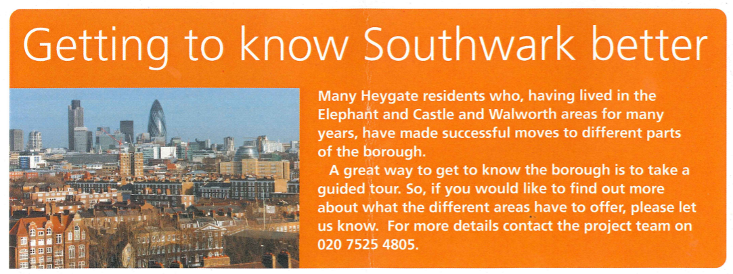

Forced Displacement
Whilst the displacement of people is deplored by international humanitarian organisations, when it happens in Britain we call it 'regeneration', 'decanting' and 'creating a more mixed community'. Heygate residents were never balloted on the decision to demolish their homes. This was a bone of contention during the preliminary stages of the regeneration, and in an interview with the local newspaper[1] the Director of Regeneration once said "The estate is so central to the entire area's regeneration scheme, that a single issue 'yes' or 'no' vote is not appropriate."
The future of the estate was thus decided by a June 1998 opinion survey, which polled 11,000 local residents asking them if they wanted to see a major change at Elephant & Castle - a resounding 94% said yes. However, what council officials failed to mention is that only 700 people responded to the survey - a return of just 6%..

What happened to the Tenants?
Having been told that the council didn't have the money to maintain their homes, tenants were promised new homes - either in the new Heygate development or in a number of so-called 'early housing' sites: the council had planned to work in partnership with housing associations to build 1,100 new social rented homes on council-owned plots of land located around the Elephant & Castle, which would replace the 1,100 units to be lost on the Heygate. The idea was that the council would give away free plots of land to housing assocations, which would build new homes in a mix of private and affordable units - the affordable units being subsidised by the free land, and the sale of private units plus grant funding. The 15 'early housing' sites were laid out in a glossy rehousing information pack issued to Heygate tenants in Autumn 2004, showing the sites in detail so that they could select which of the new homes they wanted to move into. The foreword to the information pack included the following pledge from deputy leader Cllr Cathy Bowman: "We have made sure that the construction of your new homes is the first thing that happens in this regeneration scheme." But many of the 15 council-owned sites earmarked for the replacement housing happened to be green spaces and play areas on surrounding housing estates. This naturally met with fierce opposition from local residents, and by 2007 not one of the early housing sites had been built and none had obtained planning permission. To avoid further delay of the regeneration scheme, Southwark decided to move everyone off the estate nonetheless. Council tenants were to be rehoused in historic council housing stock, insecure tenants would be dealt with according to their individual circumstances - some getting council housing, some maybe not. Leaseholders were still promised a retained equity option on the new homes to be built, but this was never to materialise. The decant decision was drawn up and passed by Cabinet in a report called the 'Heygate Action Plan', which justified the decision to bring forward the decant as follows: "Demolition of the Heygate will provide symbolic and tangible evidence to the people of Southwark that the Council is driving ahead with the regeneration of the Borough"[Para. 8]. The 'Action Plan' stated that tenants would be moved into existing council stock elsewhere in the borough, and would then be able to move back once their replacement homes at the Elephant had been built. There was natually significant protest at the revised plans, and concern that there weren't a sufficient number of suitable homes available in the council's stock. The council's response to residents' disquiet was to offer them 'Happiness Therapy' by one of the country's leading cognitive behavioural therapists:
At the beginning of the decant in 2007, there were still nearly 600 tenants on the estate. As a consolation to being moved off the estate before their replacement housing had been built, they were offered a 'Right to Return'. This was right to return to both these 'early housing sites' and the new Heygate homes once they had been built - it was valid for 7 years up to 2015. We now know that only 8 social rented homes are due to have been completed on the first phase of development within the Heygate footprint by this time, and only 45 Heygate tenants[2] have been rehoused in the so-called 'early housing sites' to date - everybody else remains in the historic council housing stock they moved into when they left the estate.  In Summer 2009 the ca. 100 tenanted households left on the estate were offered guided tours to help 'find out more about what different areas of the borough had to offer'.
{kind=link}
In September 2009 all remaining tenants on the estate were served with notices to quit. From a Freedom of Information request, we now know that only around 1 in 5 Heygate secure tenants actually remain in the SE17 postcode (216 tenants out of 1034) - the remainder have been scattered across the four corners of the borough and beyond :
 Map of Displaced Heygate Tenants
Map of Displaced Heygate TenantsThose tenants who objected were simply subjected to eviction proceedings under the 1985 Landlord & Tenant Act, which were systematically initiated against those who had failed to bid and accept a property within a period of six months. According to a document tabled during the Feb 2013 Public Inquiry, a total of 198 households were issued with 'Notices to Seek Possession'. Many were dissatisfied with the process and because of the lack of council homes in the borough, many claim they were forced to move into unsuitable alternative accommodation. An internal report from Oct 2008 shows a total of 315 households bidding on just 35 available properties in the council's homesearch system.
"There should have been new homes built for residents before they moved. That didn't happen. But they've got the right to return. In reality though, few will come back to the social housing on the new site."
Cllr. Fiona Colley, Cabinet Member for Regeneration - http://www.guardian.co.uk/society/2011/mar/04/death-housing-ideal
Leaseholders

Leaseholders were originally promised a range of options assisting them in buying one of the new-build Heygate homes[3]. But none of these options ever got written into the final agreement between the council and developer Lend Lease. When asked at the recent CPO public inquiry why leaseholders didn't get the new homes that they had been promised, the Council's lead officer replied "I don't know, I wasn't employed by the council at the time the promises were made. But the new homes will be open for anybody to purchase and I am sure Lend Lease will be happy to sell to anybody.": Most leaseholders have subsequently been forced to relocate outside central London because of the low valuations offered in compensation for their homes. Any leaseholder wanting to return to the Heygate will have to compete with overseas buyers at market prices well beyond their means. New-build Heyate homes are currently being sold at prices starting from £330,000 for a studio flat. Analysis of information received from FOI requests shows that the average compensation received by leaseholders for their homes is as follows:
- 1 Bed flat - £93,112
- 2 Bed flat - £107,230
- 3 Bed Maisonette - £156,833
- 4 Bed Maisonette - £174,111
This is why most have been forced to relocate outside central London:
 Google Map Overlay showing displacement of Heygate leaseholders
Google Map Overlay showing displacement of Heygate leaseholdersIn a recent interview with Property Week magazine, former Heygate leaseholder Terry Redpath said "I could no longer afford to stay in the area: the compensation I received plus £45,000 of life savings bought me a terraced property 15 miles out of London. I feel I have been forced to give up my home to accommodate the building of homes for overseas investors.” On average the [indexed] compensation paid to leaseholders amounts to under a third of the price of the new Heygate homes, which are currently being marketed in China, Singapore, Malaysia and Hong Kong.
The council couldn't evict leaseholders in the same way as it did the tenants. Those leaseholders who objected to the low valuations offered in compensation for their homes were able to exercise their right to remain until such time as the council obtained a Compulsory Purchase Order(CPO). This would give the council the right to evict them, after which they would be able to refer the valuation of their homes to the Lands Tribunal. Leaseholders welcomed this opportunity to have an independent tribunal determine the value of their homes rather than be dependent on the arbitrary whim of the council's surveyor. However, the council chose not to apply for the CPO and instead subjected the remaining leaseholders to a war of attrition: the council shut down the district heating system on the estate in Winter 09/10; rubbish collection and postal deliveries were stopped; estate lighting was cut off, cleaning schedules halted and the estate was withdrawn from the local community warden and police beats. It was February 2013 before the council had served the CPO and the case was to be heard before an inspector at a public inquiry. By this time just a handful of leaseholders had survived the war of attrition and were left to table their objections. The CPO is expected to be confirmed in July 2013, after which the council will serve eviction notices and the leaseholders will finally be able to refer their case to the Lands Tribunal. Remaining resident Mojisola Ojeikere sums up the leaseholders' plight: "It has been a long and weary struggle. The council are valuing my 2 bed flat at just £150,000 and have refused point blank to agree with my surveyor's valuation. The only recourse for us now is the Lands Tribunal but we can't get referred to it until after the council has served the CPO. In the meantime we have been worn down by conditions on the estate - they cut off our heating and switched off the lifts 3 years ago. There is no more cleaning or maintenance, and twice they have flooded my flat while smashing up toilets in flats overhead to deter squatters."
[1] 'Council Rules Out Vote for Future of Heygate' - Southwark News, 3rd April 2003.
[2] Paragraph 5.16, Project Director Jon Abbot's Statement of Evidence - Heygate CPO public Inquiry 5th Feb 2013.
[3] See paragraph 26 of the 2005 Leaseholder Policy and also paragraphs 4 & 33 of the Executive Report - 'Heygate Estate Decant Arrangements', 18 May 2004: "Council Executive agrees to develop housing options for leaseholders whose interests will be acquired as part of the main scheme, including shared and retained equity arrangements. The negotiation of shared ownership retained equity schemes for people to buy a share in a higher valued property will form part of the procurement exercise to select housing association and developer partners."
{kind=link}